Pero también a un uso excesivo del teléfono y a una sobredosis de fármacos : probablemente éste sea el caso del protagonista de Dinero , la novela de Martin Amis , que se pasa medio libro discutiendo por teléfono y el otro medio hinchándose de drogas hasta que se le salen por las orejas.
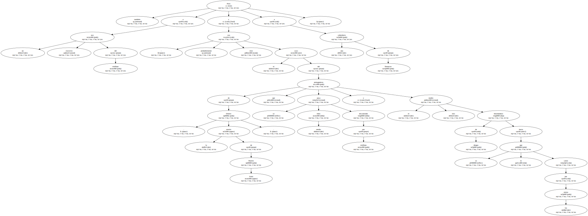Aviones aterrizando o despegando , cristales rompiéndose sin motivo , trozos de hielo que alguien machaca sin cesar : ésos son algunos de los ruidos que los oídos de ese buen hombre recrean para él cada vez que intenta conciliar el sueño.
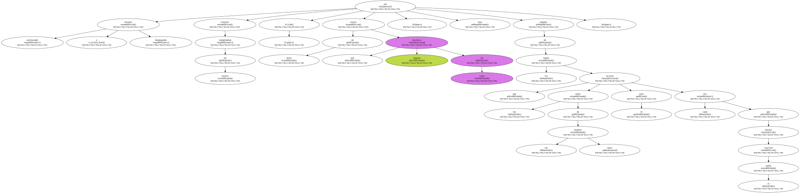Tambores cercanos , en todo caso : todo un muestrario de esa percusión urbana de nuestro tiempo.
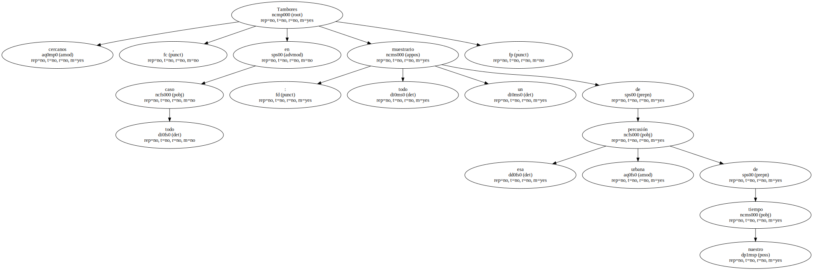Lo que ocurre con ese caballero es que se trata de un hombre sin escrúpulos ( un alma sin conciencia , como el nefasto título español de la película de Fellini ) , y que ese estrépito de aeropuertos y cristales rotos no hace sino suplir el vacío existente.
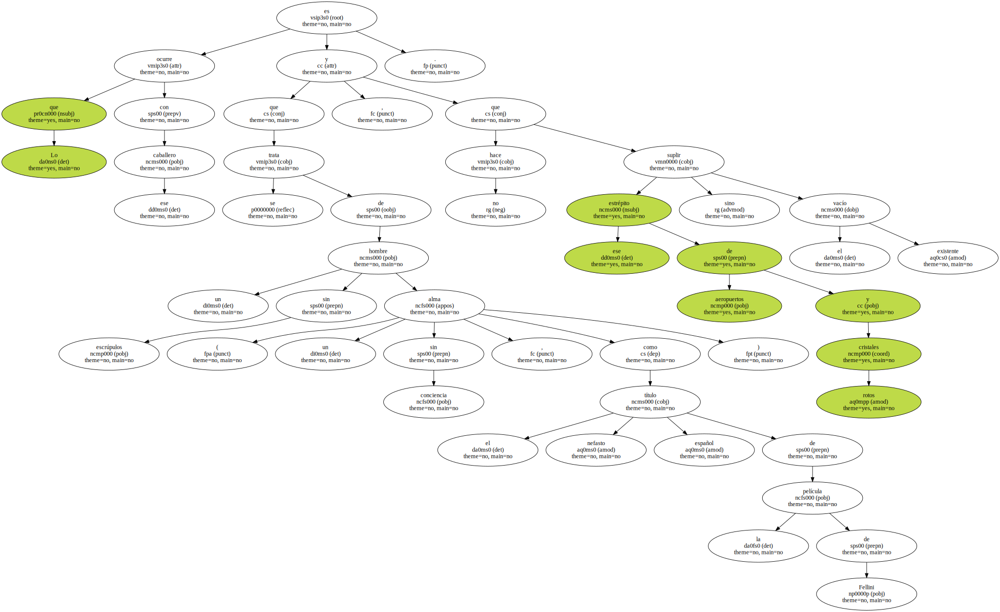- Se acuerdan ustedes de eso que se llamaba la voz de la conciencia.
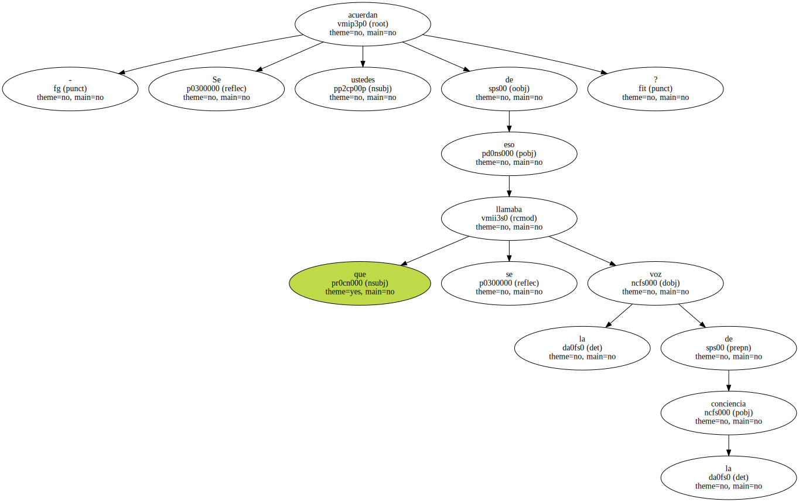Yo tardé mucho tiempo en enterarme de que no había tal voz , de que se trataba sólo de una vieja metáfora , y como nunca lograba escuchar a nadie que hablara dentro de mí me mantuve durante bastantes años en un estado de feliz inconsciencia.
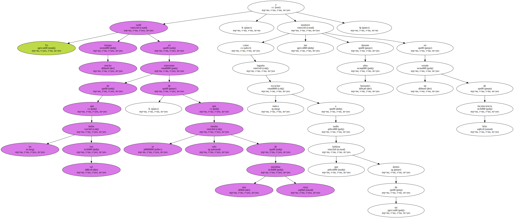Pero eso era antes de que ingresáramos en el reino de la alta tecnología y yo creo que ahora los mandatos de la conciencia los recibo por teletexto o por fax.
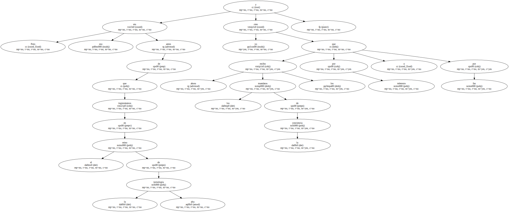Y es que ahora los oídos parecen hechos para acomodar los walkman , y son éstos los que nos proporcionan su peculiar tinnitus.

La rata es un animal clasista por naturaleza , hasta en eso es asquerosa.
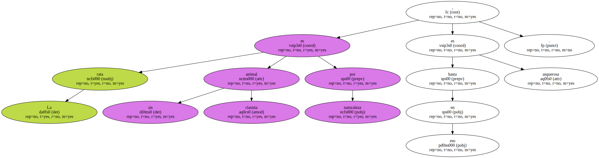La rata se arrima a los ricos , a sus coquetonas cloacas de alto standing y su inagotable paraíso de desperdicios , a sus desechos apetitosos y tantas veces intactos , y desprecia la porquería difícilmente aprovechable de los pobres y los muertos de hambre , en cuyas alcantarillas inhabitables y sin glamour nunca se encuentra unas tristes mondas de naranja que llevarse a la boca.
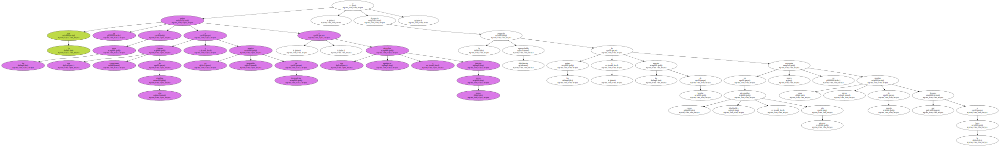Lo suyo , lo de las ratas , no es la carroña pura y dura sino la vida regalada , el eterno banquete de sobras y residuos , el festín organizado a la sobra de la abundancia y el hartazgo.
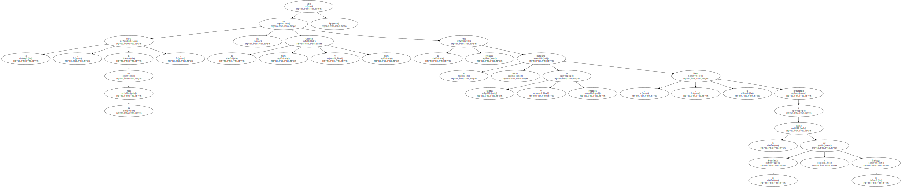Lo suyo es vivir junto a la gente fina , que come sólo la mitad de lo que compra.
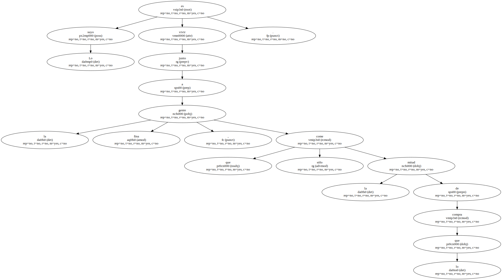Dicen que en los países más prósperos y desarrollados viven ya tantas ratas como seres humanos , y en algunos incluso más.
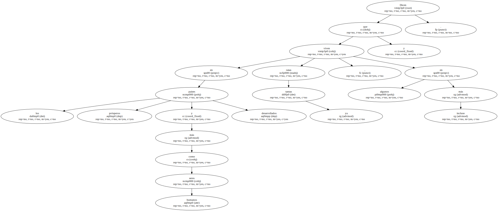A mayor riqueza mayor número de ratas.
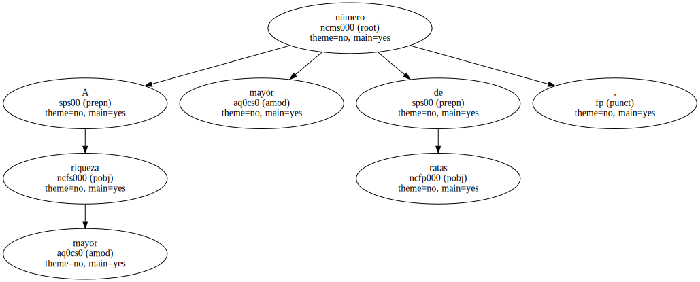- Acabará aceptándose ese factor como un nuevo índice de las economías nacionales.
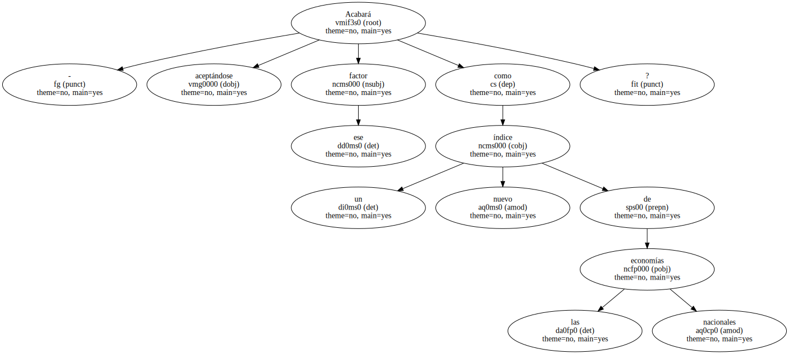